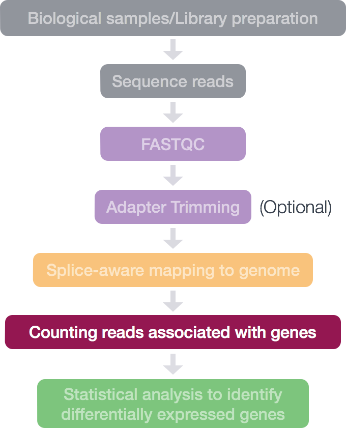
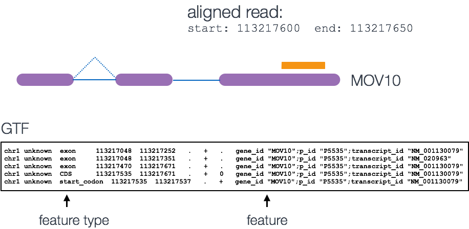
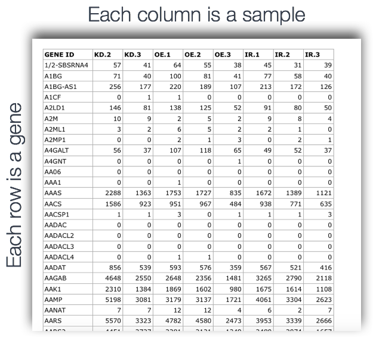
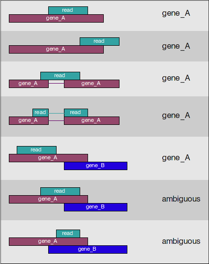

Approximate time: 50 minutes
NOTE:
To make names more generalized for the next course, /data/Bspc-training/shared/rnaseq_jan2025 is now /data/Bspc-training/shared/rnaseq_mov10 . Make sure to edit any scripts that refer to the shared data!
Learning Objectives:
- understand how counting tools work
- generate a count matrix using featureCounts
Slides
Here are the slides from Friday, including discussion of strandedness: Week 4 Slides
Counting reads as a measure of gene expression

Once we have our reads aligned to the genome, the next step is to count how many reads have mapped to each gene. There are many tools that can use BAM files as input and output the number of reads (counts) associated with each feature of interest (genes, exons, transcripts, etc.). Two commonly used counting tools are featureCounts and htseq-count.
-
By default, the above tools only report the “raw” counts of reads that map to a single location (uniquely mapping) and are best at counting at the gene level. Essentially, total read count associated with a gene (meta-feature) = the sum of reads associated with each of the exons (feature) that “belong” to that gene.
-
There are other tools available that are able to account for multiple transcripts for a given gene. In this case the counts are not whole numbers, but have fractions. In the simplest example case, if 1 read is associated with 2 transcripts, it can get counted as 0.5 and 0.5 and the resulting count for that transcript is not a whole number. However, in such a multimapping scenario we have no way of actually knowing which transcript the read came from, so this has the risk of allocating reads to the wrong transcript.
-
In addition there are other tools that will count multimapping reads, but this can introduce artifacts since you will be overcounting the total number of reads which can cause issues with normalization and eventually with accuracy of differential gene expression results.
Input for counting = multiple BAM files + 1 GTF file
Simply speaking, the genomic coordinates of where the read is mapped (BAM) are cross-referenced with the genomic coordinates of whichever feature you are interested in counting expression of (GTF), it can be exons, genes or transcripts.

Output of counting = A count matrix, with genes as rows and samples are columns
These are the “raw” counts and will be used in statistical programs downstream for differential gene expression.

Counting using featureCounts
Today, we will be using the featureCounts tool to get the gene counts. We picked this tool because it is accurate, fast and is relatively easy to use. It counts reads that map to a single location (uniquely mapping) and follows the scheme in the figure below for assigning reads to a gene/exon.

featureCounts can also take into account whether your data are stranded or not. If strandedness is specified, then in addition to considering the genomic coordinates it will also take the strand into account for counting. If your data are stranded always specify it.
Discussion: what is a stranded library and why does it matter?
Discussion: if you don’t know if your library was stranded, how can you figure it out?
Setting up to run featureCounts
First things first, start an interactive session with 4 cores:
$ sinteractive --cpus-per-task=4 --mem=16g
Now, change directories to your rnaseq directory and create a directory for the counts output:
$ cd /data/Bspc-training/$USER/rnaseq
$ mkdir results/counts
Rather than using the subset BAM file we generated in the last lesson, we will be using the BAMs generated from mapping the full input FASTQs against the full human genome. Those are stored in:
$ /data/Bspc-training/shared/rnaseq_jan2025/results_for_counting
featureCounts is available as part of the subread module on Biowulf. Load this module using the following:
# keep note of what version loads
$ module load subread
Running featureCounts
How do we use this tool, what is the command and what options/parameters are available to us?
$ featureCounts
Discussion: stdout, stderr, and
2>&1for more conveniently reading stderr help withless(i.e.,featureCounts -h 2>&1 | less, notfeatureCounts -h | less)
So, it looks like the usage is featureCounts [options] -a <annotation_file> -o <output_file> input_file1 [input_file2] ..., where -a, -o and at least one input file are required.
We are going to use the following options:
-T 4 # specify 4 cores
-s 2 # these data are "reverse"ly stranded
and the following are the values for the required parameters:
-a /data/Bspc-training/shared/rnaseq_jan2025/human_GRCh38/gencode.v47.primary_assembly.annotation.gtf: required option for specifying path to GTF
-o results/counts/mov10_all_featurecounts.txt: required option for specifying output (goes in the directory you just created)
/data/Bspc-training/shared/rnaseq_jan2025/results_for_counting/*.bam: the list of all the bam files we want to collect count information for. In this case, all of the samples for the whole experiment, aligned ahead of time with STAR for convenience.
Let’s run this now (assuming we are in our rnaseq directories):
$ featureCounts -T 4 -s 2 \
-a /data/Bspc-training/shared/rnaseq_jan2025/human_GRCh38/gencode.v47.primary_assembly.annotation.gtf \
-o results/counts/mov10_all_featurecounts.txt \
/data/Bspc-training/shared/rnaseq_jan2025/results_for_counting/*.bam
Discussion: backslash line continuation in bash for more convenient listing of commands
You should see lots of informative text such the block below, which confirms that the data are reverse-stranded and single end. Furthermore, you learn things such as the fact that about 68% of alignments are assigned to genes.
|| Process BAM file Irrel_kd_1Aligned.sortedByCoord.out.bam... ||
|| Strand specific : reversely stranded ||
|| Single-end reads are included. ||
|| Total alignments : 42072421 ||
|| Successfully assigned alignments : 28681404 (68.2%) ||
|| Running time : 0.21 minutes ||
|| ||
|| Process BAM file Irrel_kd_2Aligned.sortedByCoord.out.bam... ||
|| Strand specific : reversely stranded ||
|| Single-end reads are included. ||
|| Total alignments : 35976606 ||
|| Successfully assigned alignments : 24434907 (67.9%) ||
|| Running time : 0.18 minutes ||
|| ||
|| Process BAM file Irrel_kd_3Aligned.sortedByCoord.out.bam... ||
|| Strand specific : reversely stranded ||
|| Single-end reads are included. ||
|| Total alignments : 28143823 ||
|| Successfully assigned alignments : 18879568 (67.1%) ||
|| Running time : 0.14 minutes
If you wanted to collect the information that is on the screen as the job runs, you can modify the command and add the
2>redirection at the end. This type of redirection will collect all the information from the terminal/screen into a file. (Recap on stdout and stderr).
# **DO NOT RUN THIS**
# note the last line of the command below, which will redirect stderr to a log file
$ featureCounts -T 4 -s 2 \
-a /n/groups/hbctraining/intro_rnaseq_hpc/reference_data_ensembl38/Homo_sapiens.GRCh38.92.gtf \
-o ~/rnaseq/results/counts/Mov10_featurecounts.txt \
~/rnaseq/results/STAR/bams/*.out.bam \
2> /unix_lesson/rnaseq/results/counts/Mov10_featurecounts.log
featureCounts output
The output of this tool is 2 files, a count matrix and a summary file that tabulates how many the reads were “assigned” or counted and the reason they remained “unassigned”. Let’s take a look at the summary file:
$ less results/counts/mov10_all_featurecounts.txt.summary
Now let’s look at the count matrix:
$ less results/counts/mov10_all_featurecounts.txt
# Optionally use the -S argument to prevent line wrapping
From page 36 of the subread package manual, some help interpreting what is going on in our featureCounts table:
The read count table includes annotation columns (‘Geneid’, ‘Chr’, ‘Start’, ‘End’, ‘Strand’ and ‘Length’) and data columns (eg. read counts for genes for each library). When counting reads to meta-features (eg. genes) columns ‘Chr’, ‘Start’, ‘End’ and ‘Strand’ may each contain multiple values (separated by semi-colons), which correspond to individual features included in the same meta-feature.
Column ‘Length’ always contains one single value which is the total number of non-overlapping bases included in a meta-feature (or a feature), regardless of counting at meta-feature level or feature level. When counting RNA-seq reads to genes, the ‘Length’ column typically contains the total number of non-overlapping bases in exons belonging to the same gene for each gene.
Cleaning up the featureCounts matrix
There is information about the genomic coordinates and the length of the gene, we don’t need this for the next step, so we are going to extract the columns that we are interested in.
$ cut -f1,7,8,9,10,11,12 results/counts/mov10_all_featurecounts.txt > results/counts/mov10_all_featurecounts.Rmatrix.txt
This looks like a little bit more like a count matrix, but need to clean it up a little further by modifying the header line to get rid of those long file names:
$ head results/counts/mov10_all_featurecounts.Rmatrix.txt
# Program:featureCounts v2.0.6; Command:"featureCounts" "-T" "4" "-s" "2" "-a" "/data/Bspc-training/shared/rnaseq_jan2025/human_GRCh38/gencode.v47.primary_assembly.annotation.gtf" "-o" "results/counts/mov10_all_featurecounts.txt" "/data/Bspc-training/shared/rnaseq_jan2025/results_for_counting/Irrel_kd_1Aligned.sortedByCoord.out.bam" "/data/Bspc-training/shared/rnaseq_jan2025/results_for_counting/Irrel_kd_2Aligned.sortedByCoord.out.bam" "/data/Bspc-training/shared/rnaseq_jan2025/results_for_counting/Irrel_kd_3Aligned.sortedByCoord.out.bam" "/data/Bspc-training/shared/rnaseq_jan2025/results_for_counting/Mov10_oe_1Aligned.sortedByCoord.out.bam" "/data/Bspc-training/shared/rnaseq_jan2025/results_for_counting/Mov10_oe_2Aligned.sortedByCoord.out.bam" "/data/Bspc-training/shared/rnaseq_jan2025/results_for_counting/Mov10_oe_3Aligned.sortedByCoord.out.bam"
Geneid /data/Bspc-training/shared/rnaseq_jan2025/results_for_counting/Irrel_kd_1Aligned.sortedByCoord.out.bam /data/Bspc-training/shared/rnaseq_jan2025/results_for_counting/Irrel_kd_2Aligned.sortedByCoord.out.bam /data/Bspc-training/shared/rnaseq_jan2025/results_for_counting/Irrel_kd_3Aligned.sortedByCoord.out.bam /data/Bspc-training/shared/rnaseq_jan2025/results_for_counting/Mov10_oe_1Aligned.sortedByCoord.out.bam /data/Bspc-training/shared/rnaseq_jan2025/results_for_counting/Mov10_oe_2Aligned.sortedByCoord.out.bam /data/Bspc-training/shared/rnaseq_jan2025/results_for_counting/Mov10_oe_3Aligned.sortedByCoord.out.bam
ENSG00000290825.2 0 0 0 0 0 1
ENSG00000223972.6 0 0 0 0 0 0
ENSG00000310526.1 82 86 65 119 106 52
ENSG00000227232.6 0 0 0 0 0 0
ENSG00000278267.1 0 0 0 0 0 0
ENSG00000243485.6 0 2 1 0 3 3
ENSG00000284332.1 0 0 0 0 0 0
ENSG00000237613.3 0 0 0 0 0 0
We are going to use Vim, but we could also do this in R, or in a GUI text editor, or using other CLI tools like sed.
$ vim results/counts/mov10_all_featurecounts.Rmatrix.txt
Vim has nice shortcuts for cleaning up the header of our file using the following steps:
-
Move the cursor to the beginning of the document by typing:
gg(in normal mode). -
Remove the first line by typing:
dd(in normal mode). -
Remove the file name following the sample name by typing:
:%s/Aligned.sortedByCoord.out.bam//g(in normal mode, which will enter text in Vim’s command line at the bottom). - Remove the path leading up to the file name by typing:
:%s/\/data\/Bspc-training\/shared\/rnaseq_jan2025\/results_for_counting\///g(in normal mode). Note that we have a
\preceding each/, which tells vim that we are not using the/as part of our search and replace command, but instead the/is part of the pattern that we are replacing. This is called escaping the/. -
Remember to save and exit:
:wq - Use
headto confirm that the output is clean as expected!
$ head results/counts/mov10_all_featurecounts.Rmatrix.txt
Geneid Irrel_kd_1 Irrel_kd_2 Irrel_kd_3 Mov10_oe_1 Mov10_oe_2 Mov10_oe_3
ENSG00000290825.2 0 0 0 0 0 1
ENSG00000223972.6 0 0 0 0 0 0
ENSG00000310526.1 82 86 65 119 106 52
ENSG00000227232.6 0 0 0 0 0 0
ENSG00000278267.1 0 0 0 0 0 0
ENSG00000243485.6 0 2 1 0 3 3
ENSG00000284332.1 0 0 0 0 0 0
ENSG00000237613.3 0 0 0 0 0 0
ENSG00000308361.1 0 0 0 0 0 0
Discussion: version numbers on genes, especially from Ensembl
Discussion: Why use gene ID instead of symbol?
Note on counting PE data
For paired-end (PE) data, the bam file contains information about whether both read1 and read2 mapped and if they were at roughly the correct distance from each other, that is to say if they were “properly” paired.
When using featureCounts with paired-end data, consider using at least these arguments:
-ptriggers paired-end mode--countReadPairsso that we count fragments instead of reads. Otherwise, the counts will be roughly doubled; fragments with only one read will be under-counted.
Read the user guide and command-line help for more paired-end options.
featureCounts will automatically re-sort BAM files by name rather than coordinate. This makes reads with the same name (i.e., both reads in the pair) sort next to each other, which makes the algorithm more efficient. However, it can take a lot of time to re-sort. If you provide multiple BAM reads to featureCounts and specify paired-end mode, it will first sort all of the files – without parallelization – before doing any counting.
If you’re concerned about time efficiency, you can sort your BAMs ahead of time with samtools sort -n -@ <threads> <bam file>, provide the name-sorted BAMs to featureCounts, and include the --donotsort argument to featureCounts.
This lesson has been developed by members of the teaching team at the Harvard Chan Bioinformatics Core (HBC). These are open access materials distributed under the terms of the Creative Commons Attribution license (CC BY 4.0), which permits unrestricted use, distribution, and reproduction in any medium, provided the original author and source are credited.